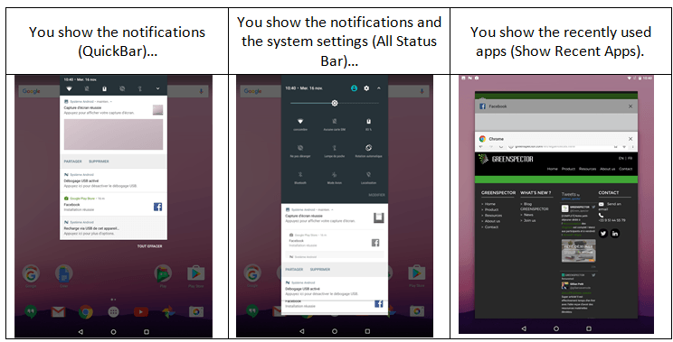
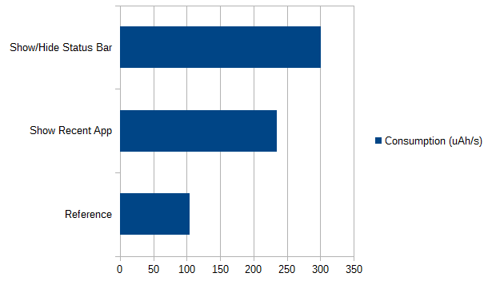
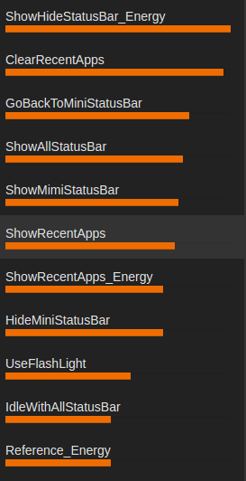
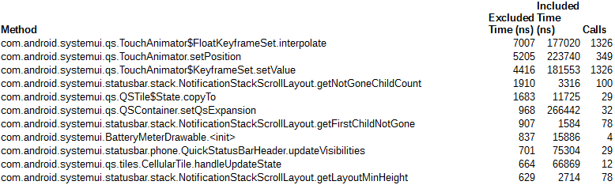
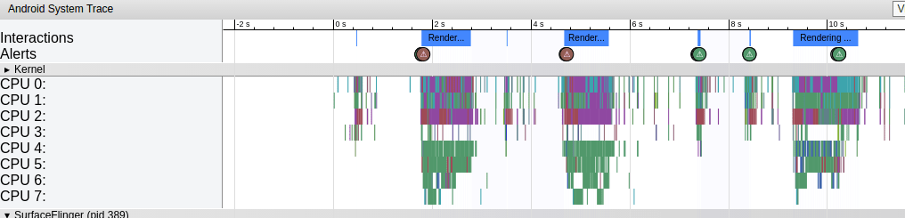
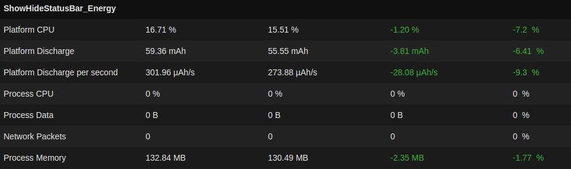

It’s not every morning that an Android developer decides to challenge the core of their favourite OS. The AOSP (Android Open Source Project) code comes straight out from Google’s factories in Palo Alto. It’s not perfect, but it’s deemed effective and reliable enough to serve as the heart of more than 1.4 billion smartphones worldwide.
So, when one of our customers asked me if we could reduce the power consumption of SystemUI, one of the basic applications of Android’s user interface, I got back up after a slight loss of consciousness, and I clearly answered “errrr…”. Because even if at GREENSPECTOR we have some nice stories to tell about eco-designing mobile applications, we didn’t feel quite ready to optimize some AOSP code…
A few days later, I was en route to Shenzhen with a fellow team member, both decided to achieve the impossible or to die trying. Well, not quite. But we had to do without baguette and camembert for 2 weeks, and that counts.
Let’s get to know the app
In order to optimize an app, first thing to do is to understand what it does, what it’s useful for, and how it’s used. In our case it’s pretty simple, you already know it: it’s this SystemUI application that’s triggered when:

As soon as we’re there, the customer confirms our goal: we have to improve this app so that it consumes less energy. Obviously the ultimate goal is to improve the battery life of their devices, and if as a side-effect the performances improve, they won’t object no to that. Up to now, we’re on familiar ground.
Step 1 : Let’s get to work
First step in any optimization approach: measure. If you want to improve things, you need to assess their status. So we have to measure the consumption of resources (CPU, RAM, data) and consumption of energy caused by using this app. While we’re at it, please note that the energy is theoretically expressed in Wh (Wattt.hour), but in a mobile context, it’s usually spoken of in Ah (Ampère.hour) which is a convenient way to refer to the battery’s capacity. Typically, the battery of your recent device has a capacity of 3,000 Ah.
This is where the Android developer is often left barehanded. Luckily enough, we work for a customer of GREENSPECTOR, so we have access to our favourite tool. The workshop is therefore composed of:
- a GREENSPECTOR server,
- a developer’s workstation (with Android Studio, adb, UIAutomator…),
- a smartphone: in our case, it’s a Nexus running Android 7.0, on which we install the GREENSPECTOR energy probe dedicated to this model.
Hence, we can launch test runs for each of the functional cases that we’ve selected. Toss in some UIAutomator to automate simple test cases, and calls to the “Meter Android” API from GREENSPECTOR. Oh! And don’t forget, prior to running the functional test cases, to run a “blank” (or “idle”) test case to establish the reference consumption for our platform.
First results come in soon:

The ShowStatusBar test case consumes 3 times more than the reference (idle) case, and ShowRecentApp consume 2.4 times more. That’s a lot!… or not? This is the question we are asked every time. Here, you may intuitively say that it’s a bit heavy, given that it’s only for displaying icons and notifications. In any case, these first measures enable us:
- To compare the functional cases with respect to the consumption of the platform when idle (which is much more relevant than to try and assess absolute figures);
- To compare the functional cases between them (which makes it possible to prioritize the rest of the work, more on this later).
Please note that I’m not giving away all the details here, in order to keep this piece readable for most readers. But you’ll be able to find them in a document available for download on our site. For example, here’s a screenshot of GREENSPECTOR with all the measured functional cases, and their relative impacts:

Step 2 : Look for the big rocks
An optimization work is not an exhaustive and planned approach. We are in a constant search of balance between the hoped-for gains, and the workload that would be needed to obtain these gains. Hence, we use this good old 80/20 rule, or what we like to call “looking for the big rocks”: if your road is blocked by a rock, you don’t have to mind the sand in your shoes yet.
In our case, the search for the big rocks has already begun: thanks to the measures carried out, we are able to target the most consuming test cases.
When we get the experts toolbox out of the van (Android Systrace, Android Traceview, HierarchyViewer…) we already know where and how to use them. These tools being very accurate on narrow points and their understanding being rather arduous, the foremost step saved us a lot of time.
Here’s a sample TraceView result, filtered on SystemUI methods:

Sample Android Systrace trace, where we see that “redraws” happen way too often:

These tools, and a peek at the source code, allow us to understand that the consumption of resources is mainly caused by 2 behaviours:
- Screen refreshing, which is triggered each time an event occurs,
- Movement tracking and animations in response to these movements, which also trigger screen refreshes.
However, not all events need to trigger a refresh of our StatusBar: here’s a good first optimization lead to follow.
By the way, you may ask how such a behaviour can take place in some code produced by Google, which generally applies good developing practices?… We may call this a kind of rebound effect. We’ve been told to avoid pooling programming and to switch to event programming as a better practice. All right, but it’s not magical: you have to control the events. Perhaps some kind of orchestrator in the app could help manage all these events? Otherwise event programming may become the new pooling programming.
Well, some investigations later, our audit led to an actions plan with 7 main points:
- Simplify the elements layout
- Do not refresh the screen for all events, be selective in triggers
- Reduce the number of method calls in MotionEvents
- Check the impact of the BatteryMeterDrawable object, which seems to over-consume cheerfully
- Optimize the screen refresh method
- Follow-up with investigating a potential bug
- Apply the good practices of Android eco-design in order to refine the source code.
We see that with this “big stones” approach, the optimization of the code by applying static rules only comes in the last position in the list. This is an important point, on which we often insist: a static audit of the source code is good, but if you want to be effective (dare I say “efficient”?), you have to integrate it in a broader approach.
Step 3 : back to the workshed (some refactoring)
Once the action plan is established, it’s usually up to the project team to implement it. We remain in support to guide if needed. In this case, we took part in the refactoring, in a joint task force with the in-house developers.
Step 4 : the moment of truth
This title is misleading. In fact, there are several moments of truth.
If we want to know which points of the action plan have really worked, if we want to be able to go back if they have not, then we have to apply them one by one and, above all, check each time that they have had a positive impact.
So we take one point, we correct, we measure. Then we go to point 2, we correct, we measure. Of course, if you’re using Git, you may want to work on branches in order to handle this at best.
In GREENSPECTOR, we declare a “v2” of the SystemUI application. Then we launch a small campaign of measures on the same smartphone. The final step is simply to go to the “Evolution” tab, to compare the consumptions of the functional test cases between v1 and v2:

On the ShowStatusBar case, we notice a battery discharge rate (Platform Discharge per second) 9% smaller than before!
On the other functional test cases, we also notice lesser consumptions.
But above all, given the very short time of this operation (2 weeks in all), we were only able to apply points 2 and 3 of the action plan! There are still significant improvements areas to explore, scented bugs to be confirmed, etcetera.
What now ?
On the return plane, between 2 well-deserved naps, we tried to sum this experience up.
Our goal was to reduce the power consumption of SystemUI, an Android core application. We have succeeded in a very short time frame, and above all we have shown that it was possible to go way further.
Hooray. But how did we get there?
The answer lies in two points:
- A good method: look for the big stones, proceed by elimination, and above all MEA-SU-RE. It’s by measurement that knowledge arrives, and by measurement that progress is evaluated. Once the big stones are identified, you spend your time and your expertise much more efficiently.
- A good tool: since you have to measure, let it be easy to do, and let the findings be relevant. We have shown that our API offered a nice versatility for in-house Android developers, and that GREENSPECTOR’s interface allowed to easily follow the findings and progresses.
So, next time a customer asks us to optimize an Android core app, instead of answering “eeerrrr…” with my usual eloquence, I’ll say “OK. Let’s begin by measuring it”.
You can download and read the full document here